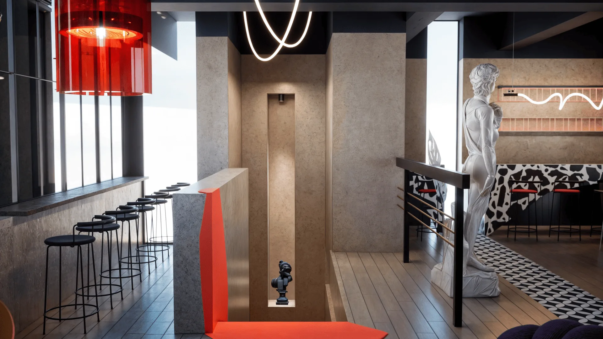
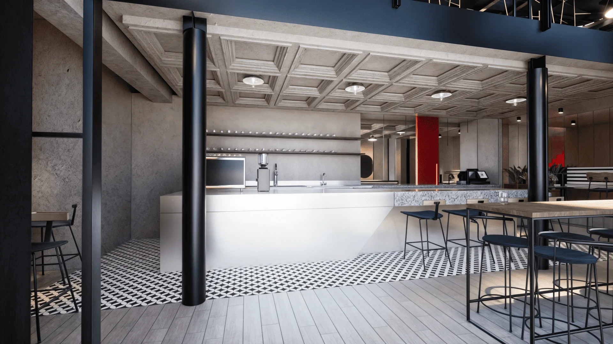
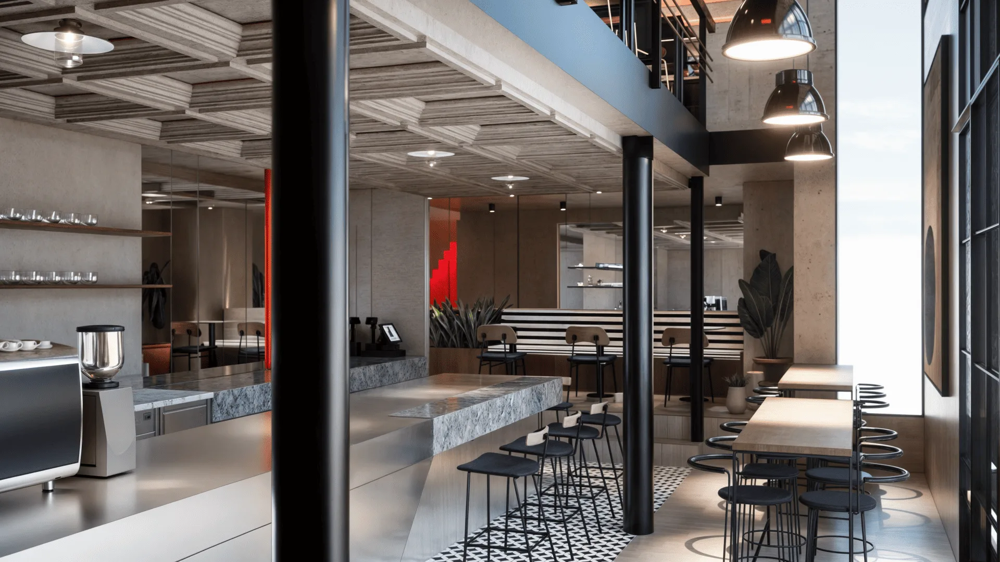
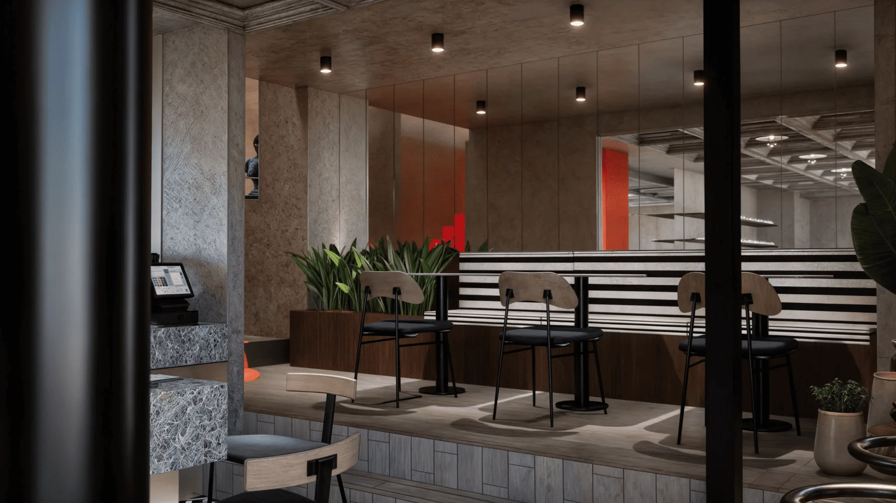
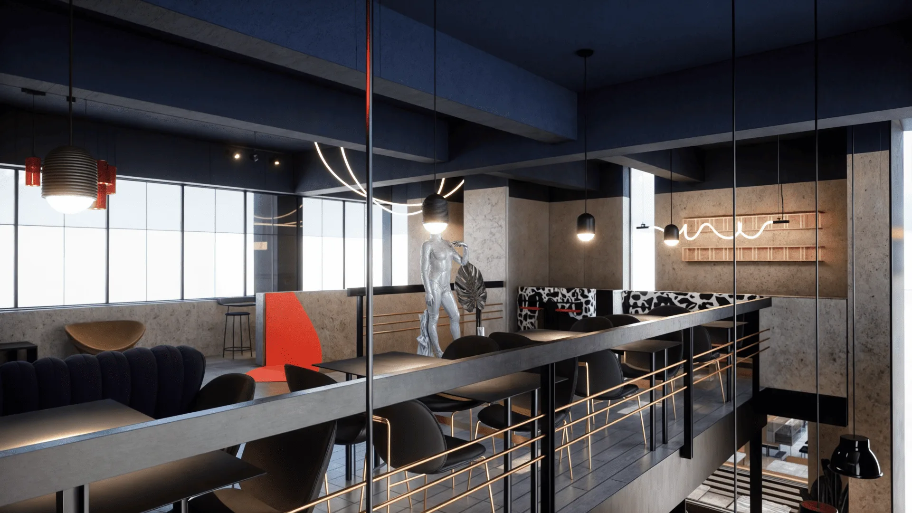
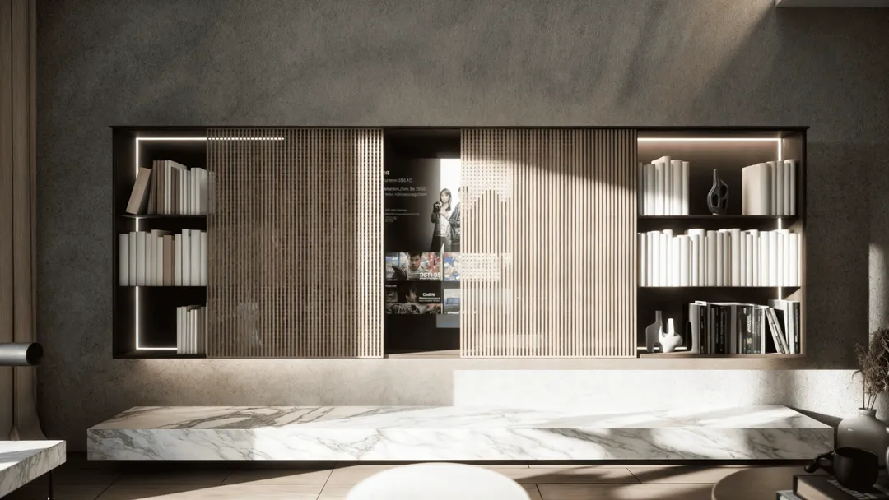

Caffe Spass, Belgrade
Beograd, Srbija, 2024
Caffe Spass zauzima prostor dvostruke visine u Ulici kralja Petra u Beogradu. Zadržali smo sirovu konstrukciju od čeličnih stubova, golog betona i kasetiranog plafona, a naspram nje postavili smelu paletu crvene, crne i bele, sa mezaninom koji se nadvija nad glavnom salom.
Šarene pločice, grafički šank, skulpturalne figure i linijsko osvetljenje čine živahan prostor snažnog identiteta.







Sledeći projekatApartment Sakura 2/24Pogledaj projekat
